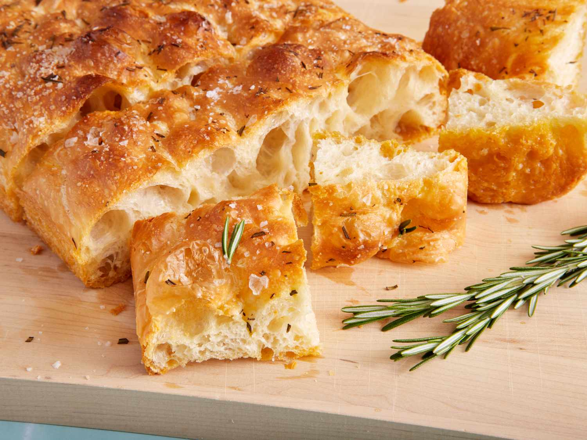

Foccaccia
Home Page

Description
This is a recipe for very easy and delicious foccaccia. (I really think I'm spelling
that word wrong so i ask my humble reader for grace and forgiveness). It is not difficult
and does not require kneading but it does take a while so a little forward planning is
required.
This recipe is originally from bon appetit but their website sucks so i'm recreating the
recipe here.
Ingredients
- 2.25 tsp active dry yeast (couldn't 100% tell you what this means, we just use bakers yeast from terra madre)
- 2 tsp honey
- 5 cups plain flour
- 5 tsp salt
- 6 tbsp EVOO
- 1 tbsp unsalted butter
- flaky sea salt like Maldon
Instructions
-
Whisk one 1/4 oz. envelope active dry yeast (about 2 1/4 tsp.), 2 tsp. honey, and 2 1/2 cups lukewarm water in a medium
bowl and let sit 5 minutes (it should foam or at least get creamy; if it doesn’t your yeast is dead and you should start
again.)
-
Add 5 cups (625 g) all-purpose flour and 5 tsp. Diamond Crystal or 1 Tbsp. Morton kosher salt and mix with a rubber spatula
until a shaggy dough forms and no dry streaks remain.
-
Pour 4 Tbsp. extra-virgin olive oil into a big bowl that will fit in your refrigerator. This puppy is going to rise!
Transfer dough to a bowl and turn to coat in oil. Cover with a silicone lid or plastic wrap and chill until dough is
doubled in size (it should look very bubbly and alive), at least 8 hours and up to 1 day. If you’re in a rush, you can
also let it rise at room temperature until doubled in size, 3-4 hours.
-
Generously butter a 13x9” baking pan, for thicker focaccia that’s great for snacking, or an 18x13” rimmed baking sheet,
for focaccia that’s thinner and perfect for sandwiches. The butter may seem superfluous, but it’ll ensure that your focaccia
doesn’t stick. Pour 1 Tbsp. extra-virgin olive oil into center of pan. Keeping the dough in the bowl and using a fork in
each hand, gather up the edges of dough farthest from you and lift up and over into center of bowl. Give the bowl a quarter
turn and repeat process. Do this 2 more times; you want to deflate the dough while you form it into a rough ball. Transfer
dough to prepared pan. Pour any oil left in bowl over and turn dough to coat it in oil. Let rise, uncovered, in a dry, warm
spot until doubled in size, at least 1 1/2 hours and up to 4 hours.
-
Place a rack in middle of oven; preheat to 450°. To see if the dough is ready, poke it with your finger. It should spring
back slowly, leaving a small visible indentation. If it springs back quickly, the dough isn’t ready. (If at this point the
dough is ready to bake but you aren’t, you can chill it up to 1 hour.) Lightly oil your hands. If using a rimmed baking sheet,
gently stretch out dough to fill the pan (you probably won’t need to do this if using a baking pan). Dimple the focaccia all
over with your fingers, like you’re aggressively playing the piano, creating very deep depressions in the dough (reach your
fingers all the way to the bottom of the pan). Drizzle with remaining 1 Tbsp. extra-virgin olive oil and sprinkle with flaky
sea salt. Bake focaccia until puffed and golden brown all over, 20-30 minutes. When ready to serve, lightly brush the top
with a little more olive oil to make it shiny. Slice and serve!